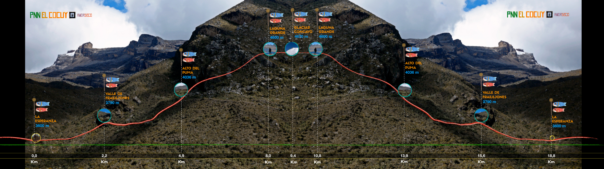
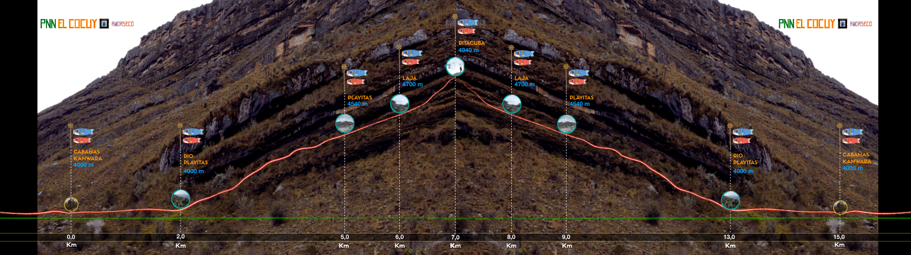

Choose Your Ascent
Púlpito del Diablo
Distance: 17.2 km (Round-trip) | Max Elevation: 4,800 m
Crosses the Lagunillas Valley, leading to the massive, square rock structure sitting on the edge of the Pan de Azúcar glacier.

Laguna Grande
Distance: 15.8 km (Round-trip) | Max Elevation: 4,600 m
A demanding trail offering panoramic views of the southern Sierra Nevada and high-altitude glacial lakes. Optional: +2.5 km to view the Concavo glacier.

Ritacuba Blanco
Distance: 15.3 km (Round-trip) | Max Elevation: 4,970 m
A direct alpine approach to the base of Ritacuba Blanco (5,330 m), the highest summit in Colombia's Eastern Andes.
